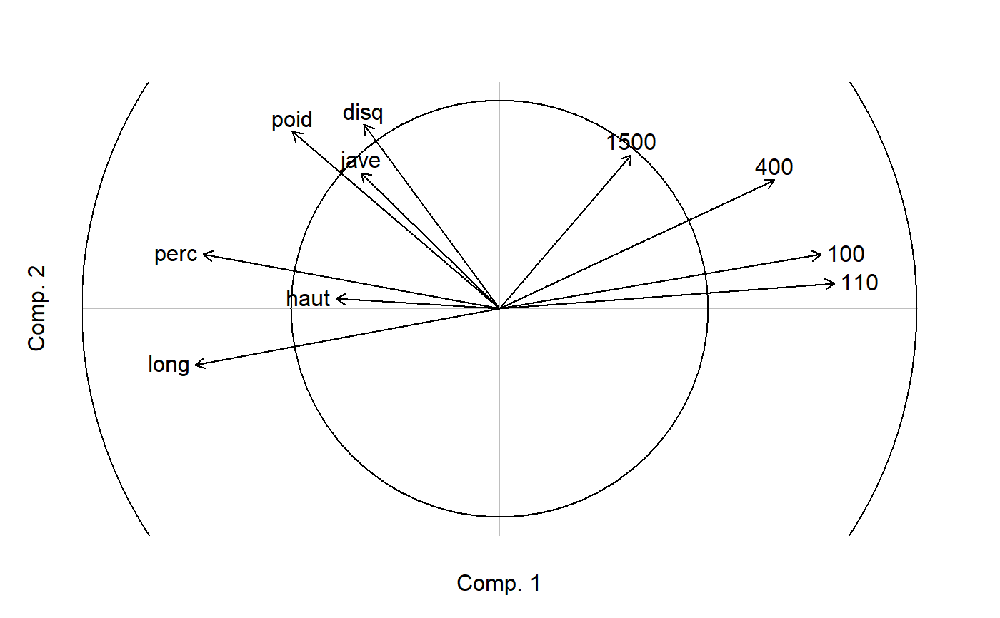

MVA.corplot.RdDisplays a correlation circle of a multivariate analysis.
MVA.corplot(x, xax = 1, yax = 2, thresh = 0, fac = NULL, set = c(12, 1, 2), space = 1, xlab = NULL, ylab = NULL, main = NULL, circle = TRUE, intcircle = 0.5, points = TRUE, ident = TRUE, arrows = TRUE, labels = NULL, main.pos = c("bottomleft", "topleft", "bottomright", "topright"), main.cex = 1.3, legend = FALSE, legend.pos = c("topleft", "topright", "bottomleft", "bottomright"), legend.title = NULL, legend.lab = NULL, pch = 16, cex = 1, col = 1, lwd = 1, drawintaxes = TRUE, add = FALSE, add.const = 1, keepmar = FALSE)
| x | a multivariate analysis (see Details). |
|---|---|
| xax | the horizontal axis. |
| yax | the vertical axis. This can be set to |
| thresh | threshold (in absolute value of the correlation coefficient) of variables to be plotted. |
| fac | an optional factor defining groups of variables. |
| set | variables to be displayed, when several sets are available (see Details). |
| space | variables to be displayed, when several spaces are available (see Details). |
| xlab | legend of the horizontal axis. If |
| ylab | only used for two-dimensional graphs. Legend of the vertical axis. If |
| main | optional title of the graph. |
| circle | only used for two-dimensional graphs. Logical indicating if the circle of radius 1 should be plotted. |
| intcircle | only used for two-dimensional graphs. Vector of one or several values indicating radii of circles to be plotted inside the main circle. Can be set to |
| points | only used for two-dimensional graphs. If |
| ident | only used for two-dimensional graphs when |
| arrows | only used if |
| labels | names of the variables. If |
| main.pos | position of the title, if |
| main.cex | size of the title, if |
| legend | only used for two-dimensional graphs. Logical indicating if a legend should be added to the graph. |
| legend.pos | position of the legend, if |
| legend.title | optional title of the legend, if |
| legend.lab | legend labels, if |
| pch | symbol(s) used for points, when points are displayed (see |
| cex | size of the points and/or of the variable names. For two-dimensional graphs: if |
| col | color(s) used for points and/or variable names. If |
| lwd | only used if arrows are displayed. Width of arrows. If |
| drawintaxes | logical indicating if internal axes should be drawn. |
| add | only used for two-dimensional graphs. Logical indicating if the correlation circle should be added to an existing graph. |
| add.const | only used for two-dimensional graphs and if |
| keepmar | only used for two-dimensional graphs. Logical indicating if margins defined by MVA.corplot should be kept after plotting (necessary in some cases when |
This function should not be use directly. Prefer the general MVA.plot, to which all arguments can be passed.
Many multivariate analyses are supported, from various packages:
- sPCA: spca.
- IPCA: ipca.
- sIPCA: sipca.
- PLS-DA (PLS2 on a dummy-coded factor): plsda. X space only.
- sPLS-DA (sPLS2 on a dummy-coded factor): splsda. X space only.
- CPPLS: mvr. Set 1 is X, set 2 is Y. If set=12 (default), fac is not available and pch,cex, col, lwd can be defined differently for each set. X space only.
- PLSR: mvr, pls, plsR (plsRglm package). Set 1 is X, set 2 is Y. If set=12 (default), fac is not available and pch,cex, col, lwd can be defined differently for each set. X space only.
- sPLSR: pls. Set 1 is X, set 2 is Y. If set=12 (default), fac is not available and pch,cex, col, lwd can be defined differently for each set. X space only.
- PLS-GLR: plsRglm (plsRglm package). Set 1 is X, set 2 is Y. If set=12 (default), fac is not available and pch,cex, col, lwd can be defined differently for each set. Correlations are computed with Y on the link scale.
- PCR: mvr. Set 1 is X, set 2 is Y. If set=12 (default), fac is not available and pch,cex, col, lwd can be defined differently for each set.
- CDA: discrimin, discrimin.coa.
- NSCOA: dudi.nsc. For NSCOA there is no real correlation, but the classical representation of columns is arrows. This is why MVA.corplot was made able to deal with this analysis.
- CCA: cca, pcaiv. Constraints (only quantitative constraints are extracted) in constrained space only.
- Mix analysis: dudi.mix, dudi.hillsmith. Only quantitative variables are displayed.
- RDA (or PCAIV): pcaiv, pcaivortho, rda. With rda, space 1 is constrained space, space 2 is unconstrained space. Only constrained space is available with pcaiv, the opposite for pcaivortho. Set 1 is constraints (only quantitative constraints are extracted), set 2 is dependent variables (only set 2 is available for pcaivortho). If set=12 (default), fac is not available and pch,cex, col, lwd can be defined differently for each set.
- db-RDA: capscale, dbrda. Constraints (only quantitative constraints are extracted) in constrained space only.
- CCorA: CCorA, rcc. Space 1 is X, space 2 is Y. With rcc a third space is available, in which coordinates are means of X and Y coordinates. In this third space, set 1 is X, set 2 is Y. If set=12 (default), fac is not available and pch,cex, col, lwd can be defined differently for each set.
- rCCorA: rcc. Space 1 is X, space 2 is Y, space 3 is a "common" space in which coordinates are means of X and Y coordinates. In space 3, set 1 is X and set 2 is Y. If set=12 (default), fac is not available and pch,cex, col, lwd can be defined differently for each set.
- CIA: coinertia. Space 1 is X, space 2 is Y, space 3 is a "common" space where X and Y scores are normed. In space 3, set 1 is X and set 2 is Y. If set=12 in space 3 (default), fac is not available and pch,cex, col, lws can be defined differently for each set.
- PCIA: procuste. Set 1 is X, set 2 is Y.
- 2B-PLS: pls. Space 1 is X, space 2 is Y, space 3 is a "common" space in which coordinates are means of X and Y coordinates. In space 3, set 1 is X and set 2 is Y. If set=12 (default), fac is not available and pch,cex, col, lwd can be defined differently for each set.
- 2B-sPLS: pls. Space 1 is X, space 2 is Y, space 3 is a "common" space in which coordinates are means of X and Y coordinates. In space 3, set 1 is X and set 2 is Y. If set=12 (default), fac is not available and pch,cex, col, lwd can be defined differently for each set.
- rGCCA: wrapper.rgcca. Space can be 1 to n, the number of blocks (i.e. datasets).
- sGCCA: wrapper.sgcca. Space can be 1 to n, the number of blocks (i.e. datasets).
- DIABLO: block.plsda, block.splsda. Space can be 1 to n, the number of blocks (i.e. datasets).
